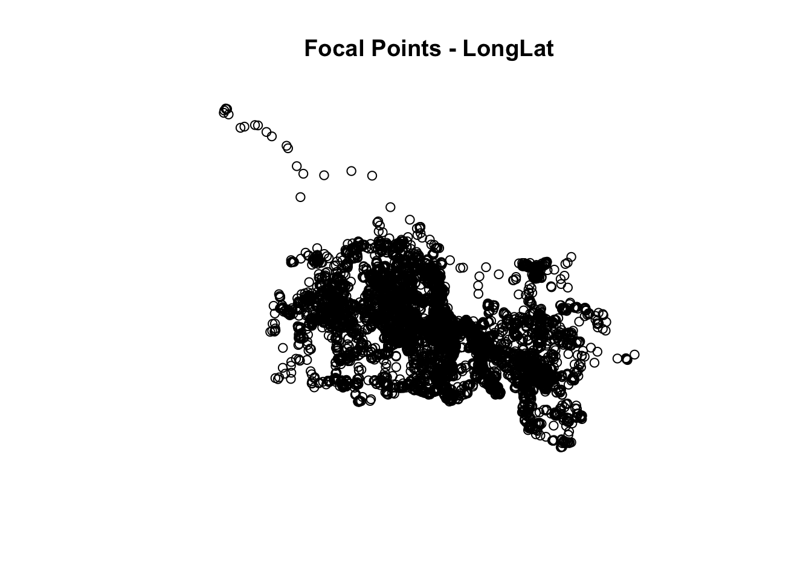
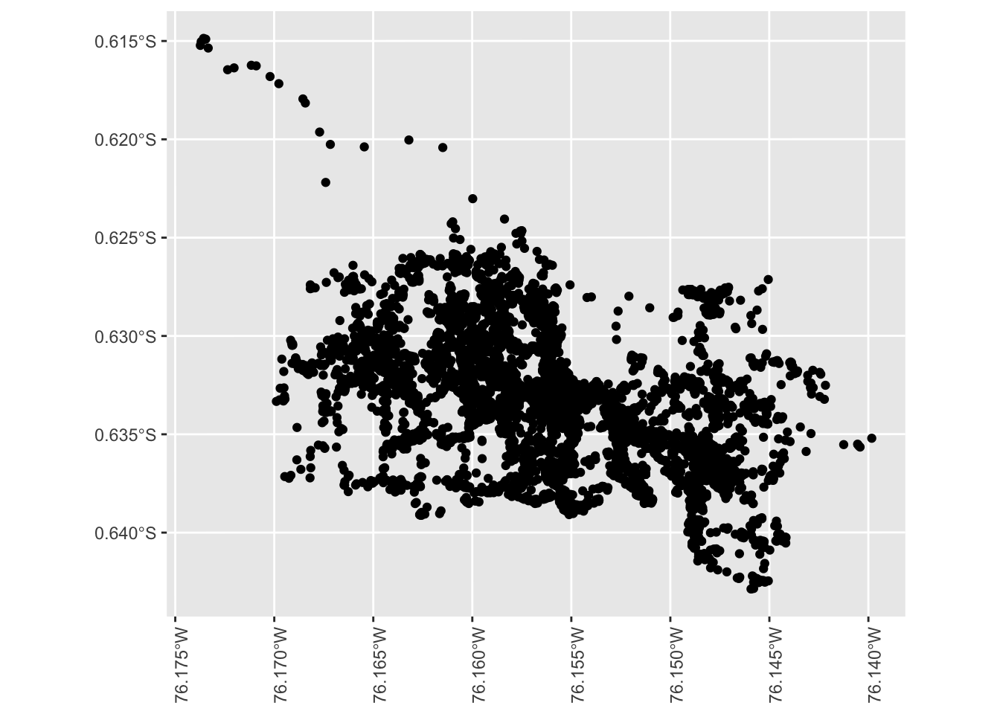
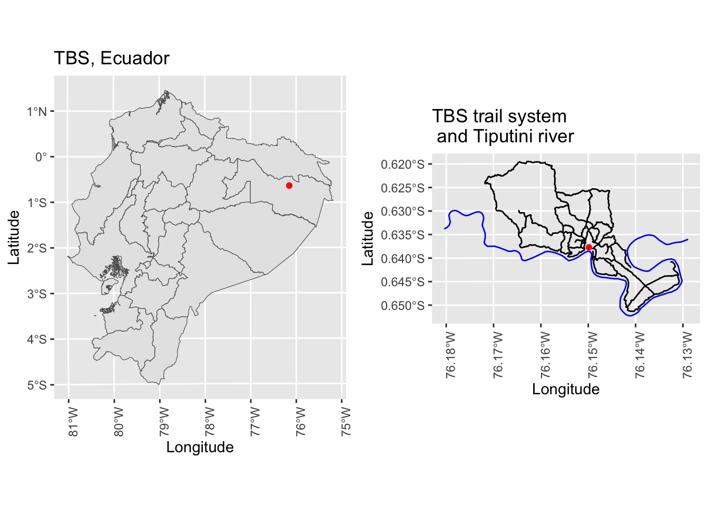
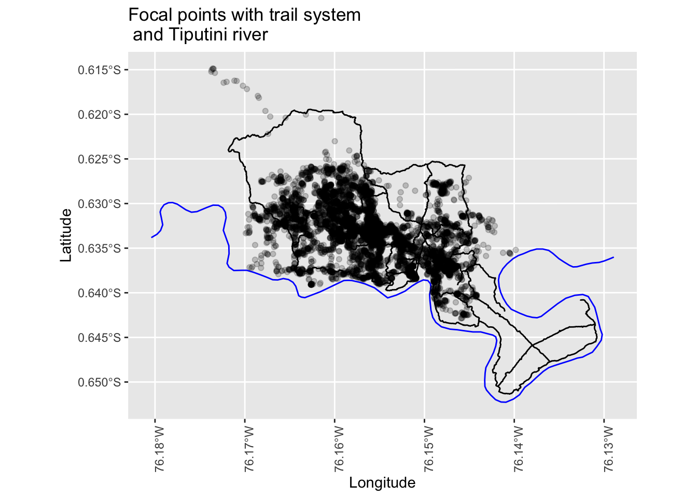
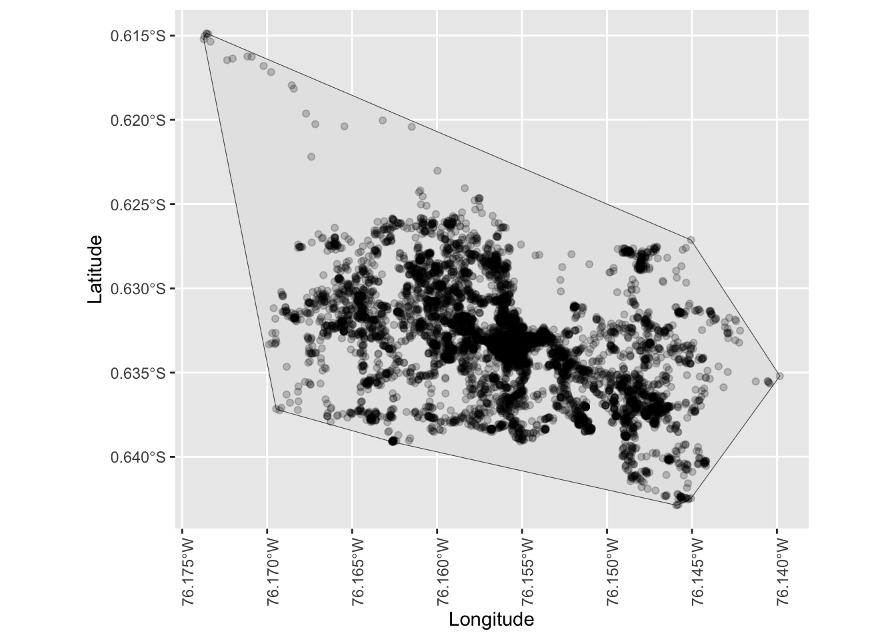
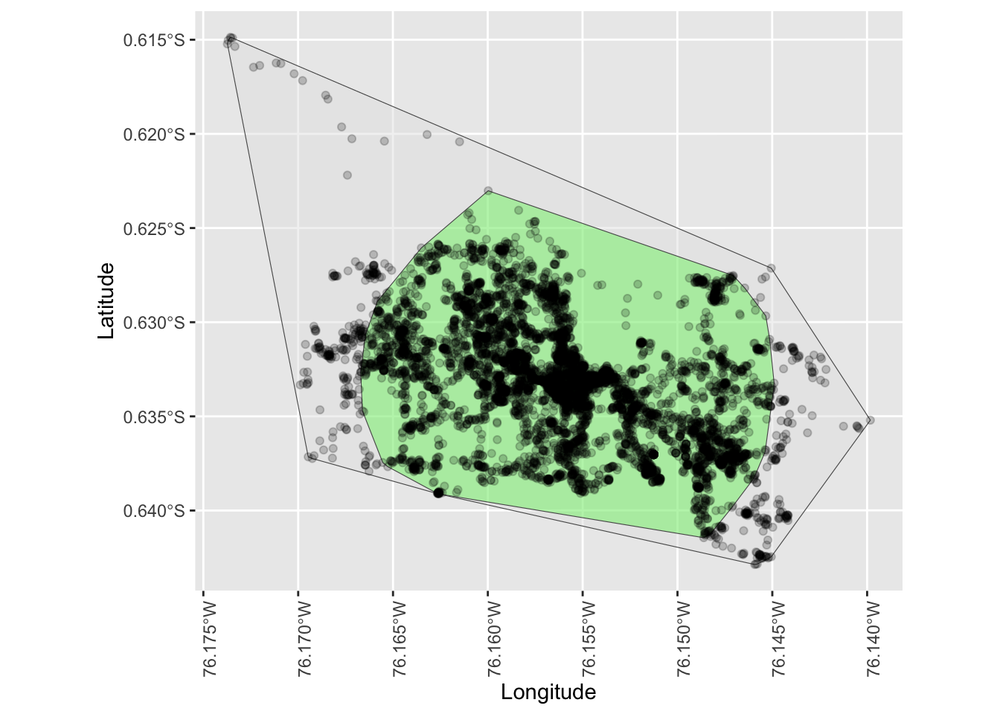
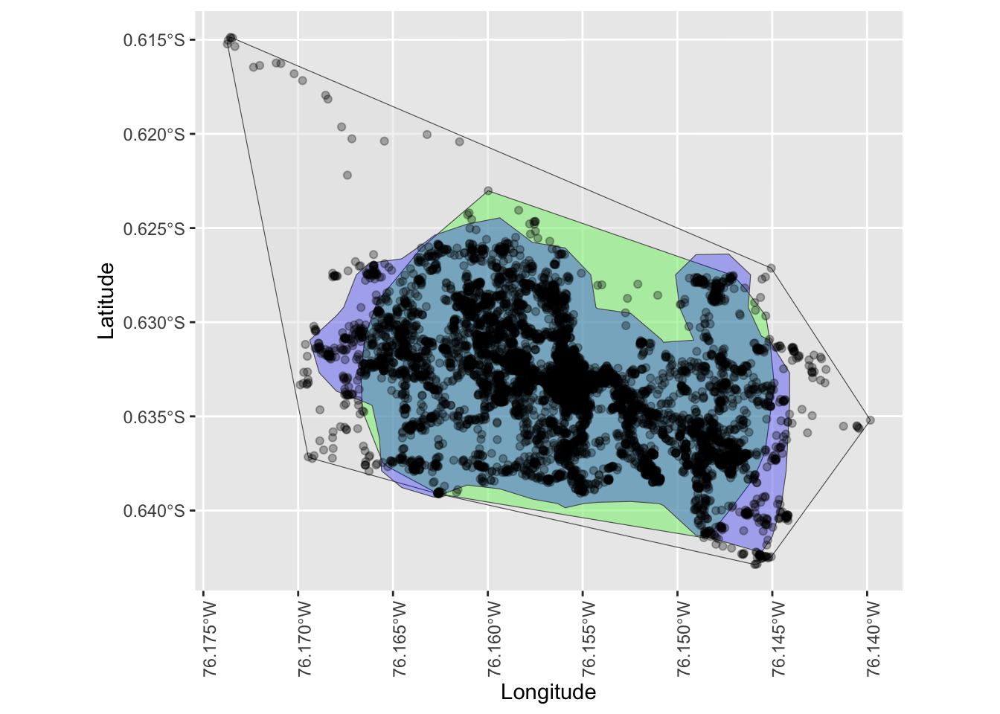

library(tidyverse)
library(sp)
library(sf)
library(cowplot)
library(adehabitatHR)Basic Geospatial Data Analysis
Objectives
- Load the following packages:
Background
In recent years, affordable and accessible GPS units or GPS-enabled smartphones, watches, tablets, cameras, etc. have allowed for the recording of data with precise locations attached. This increase in the amount of available spatial data has been associated with an increase in demand for visualizations and analyses of such data, to exploit the richness of analysis that location affords.
Spatial data can be processed and analyzed using a geographic information system (GIS). There are several packages and software available capable of working with spatial data, but in many cases, data observations may not be independent or the relationship between variables may vary across geographical space. Thus standard statistical packages are often inadequate for analysis as they cannot account for the complexities of spatial processes and spatial data. Additionally, although standard GIS packages and software, such as the ESRI system of products, provide tools for the visualization of spatial data, their analytical capabilities are relatively limited and inflexible. Some R packages, on the other hand, are created by experts and innovators in the field of spatial data analysis and visualization, making R one of the best environments for spatial data analysis and manipulation. R can also be used to complement other mapping programs; for example, with visualizations completed in ArcGIS followed by data analysis in R.
The sp spatial data format, as defined in the {sp} package, has been a dominant format in R for several years and provides an organized set of classes for storing spatial data. These classes (or types of sp objects) correspond to the three main types of vector data, i.e., the data used to represent real world features in a GIS: points (with class “SpatialPoints”), lines (with class “SpatialLines”), and areas (with class “SpatialPolygons”). Tools drawn from a range of R packages, such as {maptools}, {GISTools}, and {adehabitatHR} require spatial data in the sp format for spatial data analysis. Currently, however, the R spatial community is in a period of transition from relying on the sp format to using a newer way of representing spatial data known as “simple features” or sf format.
“Simple features” refers to a formal standard that describes how objects in the real world can be represented, stored, and accessed, with emphasis on the spatial geometry of these objects. The standard is widely implemented in spatial databases (such as PostGIS) and is the basis for most of the newer R packages dealing with spatial data. A “feature” is thought of as a thing, or an object in the real world, that has a geometry (i.e., coordinates) describing where on Earth the feature is located. Just as objects in R often consist of other objects, a set of features can form a single feature. So, a tree can be a feature, a forest stand can be a feature, or an entire country can be a feature. There are many sf feature types, but the key ones again correspond to points (“Point”), lines (“Linestring”), and areas (“Polygon”). The {sf} package has a stronger theoretical structure than {sp}, with, for example, “multipoint” features being composed of single point features. However, many packages providing operations and functions for spatial data analyses have not been updated to work with sf format spatial data. Therefore, both the sp and sf formats are introduced here and used throughout this module, with conversion between the two occurring as needed.
In addition to their geometry, spatial data may also have any number of additional attributes, which describe other properties of a feature (i.e., metadata, such as population, length, area, etc.). The attributes associated with individual features (lines, points, and areas in vector data and cell values in raster data) provide the basis for spatial analyses and geographical investigation.
It is common for researchers to begin their spatial analyses with point data represented in tabular format rather than as an R spatial object (i.e., of class sp or sf format), so importing data for GIS analyses is often similar to importing data for other R analyses. As with non-spatial data, tabular datasets consisting of sets of features with geometries and attributes are the most useful structure for important and wrangling in R. In spatial data frames, each record (row) typically represents a single feature, while the fields (columns) describe the coordinates plus any variables or attributes associated with that feature.
In this module we will work primarily with a dataset of the ranging patterns for a group of spider monkeys, Ateles belzebuth, at Tiputini Biodiversity Station from July 2010 through June 2012. Rows in the data file we will work with represent point data describing the tracks of monkeys that were originally collected at 15-minute intervals using handheld GPS units while performing behavioral focal follows on members of a single social group named MQ1. Let’s load some packages and import this dataset now:
f <- "https://raw.githubusercontent.com/difiore/ada-datasets/main/spatial_data/spider_monkeys.csv"
d <- read_csv(f, col_names = TRUE)
head(d)## # A tibble: 6 × 7
## Date Time OS Focal Composition Latitude Longitude
## <chr> <time> <chr> <chr> <chr> <dbl> <dbl>
## 1 18-Jul-10 12:00 OS98155 Nenki/ Nenki/Sammy/Poto/Lucas/And… -0.633 -76.2
## 2 18-Jul-10 12:15 OS98155 Nenki/ Nenki/Sammy/Poto/Lucas/And… -0.632 -76.1
## 3 18-Jul-10 12:30 OS98155 Nenki/ Nenki/Sammy/Poto/Lucas/And… -0.632 -76.1
## 4 18-Jul-10 13:00 OS98155 Sammy/ Nenki/Sammy/Poto/Lucas/And… -0.631 -76.1
## 5 18-Jul-10 13:15 OS98155 Sammy/ Nenki/Sammy/Poto/Lucas/And… -0.629 -76.1
## 6 18-Jul-10 13:30 OS98155 Sammy/ Nenki/Sammy/Poto/Lucas/And… -0.630 -76.1As we can see, the dataset includes not only the focal point locations of the group given in latitude and longitude, but attributes including the subgroup composition, date and time of observation, and other details (the focal and/or observation number, observer, etc.) at each of those points.
Projections and CRSs
In order to carry out spatial analyses, we first want to convert this data frame to the sp or sf format. There are few ways to do this, but one of the most straightforward workflows, particularly if we need to re-project the geometry/coordinates, is the following:
- Import the data in tabular format
- Assign the coordinates for the spatial object
- Assign the current projection of the coordinates
- Create an
spdata format object from the data and assign the coordinate reference system (CRS) relevant to the imported data - If required, convert the object to a new CRS to match that of other spatial objects in the project
- If required, convert the
spobject tosfformat usingst_as_sf()
These steps are important because they allow us to define a common CRS, and project all data into the same geospatial extent. Coordinate reference systems are like measurement units for coordinates: they provide a standardized way of describing locations and specify to which location on Earth a particular coordinate pair refers. Coordinates can only be placed on the Earth’s surface when their CRS is known and specified. In R, when data with different CRSs are combined, it is important to transform them to a common CRS so they align with one another.
A CRS includes the datum, projection, and unit components, and in R is described using proj4string notation, which is a standard defined and implemented in a geospatial data processing library called PROJ4. The datum defines the origin and orientation of the coordinate axes, as well the size/shape of Earth, and also specifies an ellipsoid model that is used to characterize the globe.
A particular CRS can be referenced by its EPSG code, which is an integer ID for a particular, known CRS that can be resolved into a proj4string representation. There are two general types of CRSs:
- unprojected (or geographic): e.g., Latitude/Longitude for referencing a location on the ellipsoid model of the Earth
- projected: e.g., Easting/Northing distances for referencing the location on a particular 2D representation of the Earth
An elliptical Earth is thus projected onto a flat surface. Map coordinates for a point are computed from their ellipsoidal latitude and longitude by a standard formula known as a map projection. But because it is impossible to flatten a round object without distortion, this results in trade-offs between area, direction, shape, and distance. There is no “best” projection, but some projections are better suited to different applications.
The Universal Transverse Mercator (UTM) projection, for example, is commonly used in research because it tends to be more locally accurate and has attributes that make estimating distance easy and accurate. Positions are described using Easting and Northing coordinates. The Mercator projection preserves angles and direction, but distorts distance. To minimize this distortion, the UTM divides the Earth into sixty separate zones. The UTM zone for a location of interest can easily be found online. The points collected at TBS in Eastern Ecuador are mapped to UTM zone 18 South.
Now let’s convert our spider monkey data frame into an sp object. Our initial coordinates are given in longitude and latitude, but we want to transform all of our data to a UTM projection as we’ll be mapping and analyzing points on a 2D surface. For this, we need to define the datum and projection.
The World Geodetic System 1984 (WGS84) is a common standard datum to used. It is defined and maintained by the United States National Geospatial-Intelligence Agency, and so is typically the default for US GPS systems. Therefore, the datum for our coordinate reference system is “WGS84”. The data we will import will have either been collected in longitude/latitude format (with projection “longlat”) or may consist of Easting/Northing coordinates already projected to UTM Zone 18S (with projection UTM Zone 18S). Lastly, we’ll select meters as our units to include in our proj4string specification. Once we’ve projected and transformed the data into a common CRS, we can use the generic plot() function to see a spatial representation of our points stored in sp format.
Creating an sp Object
By running the coordinates() function, we can specify which columns of a given data frame hold coordinate (x, y) data and convert the data frame to an sp object.
#
coordinates(d) <- c("Longitude", "Latitude")
class(d)## [1] "SpatialPointsDataFrame"
## attr(,"package")
## [1] "sp"We then need to set a CRS for this object based on the CRS that the original coordinate data were collected in…
# specify the crs of original data
proj_original <- "+proj=longlat +datum=WGS84"
proj4string(d) <- CRS(proj_original)
proj4string(d)## [1] "+proj=longlat +datum=WGS84 +no_defs"plot(d, pch = 1, main = "Focal Points - LongLat")
If we want, we can change the CRS using the spTransform() function…
proj_new <- "+proj=utm +zone=18 + south +datum=WGS84 +units=m"
d_sp <- spTransform(d, CRS(proj_new))
proj4string(d_sp)## [1] "+proj=utm +zone=18 +south +datum=WGS84 +units=m +no_defs"plot(d_sp, pch = 1, main = "Focal Points - UTM")proj4string(d_sp)## [1] "+proj=utm +zone=18 +south +datum=WGS84 +units=m +no_defs"We can also ask R to confirm that these points are indeed projected or examine a summary of our sp object.
is.projected(d_sp)## [1] TRUEsummary(d_sp)## Object of class SpatialPointsDataFrame
## Coordinates:
## min max
## coords.x1 369392 373165
## coords.x2 9928929 9932024
## Is projected: TRUE
## proj4string :
## [+proj=utm +zone=18 +south +datum=WGS84 +units=m +no_defs]
## Number of points: 8584
## Data attributes:
## Date Time OS Focal
## Length:8584 Length:8584 Length:8584 Length:8584
## Class :character Class1:hms Class :character Class :character
## Mode :character Class2:difftime Mode :character Mode :character
## Mode :numeric
## Composition
## Length:8584
## Class :character
## Mode :character
## We can convert sp format spatial data to sf format using the st_as_sf() function, and sf format spatial data can be plotted using geom_sf() from {ggplot}.
d_sf <- st_as_sf(d_sp, CRS(proj_new))
ggplot() + geom_sf(data = d_sf) + theme(axis.text.x = element_text(angle = 90))
As with non-spatial data frames and tibbles, the data frame of these spatial objects can be accessed to examine, manipulate, or classify the attribute data or generate simple summaries. Here, we’ll add an attribute to our sp object for group size (defined here as the number of adult individuals in a subgroup at any given point) using our attribute for group composition, then generate summary statistics.
NOTE: In the code example below, we are accessing the
@dataslot of the d_sp spatial object we created above… this slot consists of the original tabular data we loaded, minus the columns specifying the coordinates for each row.
This code example calculates the five-number summary and the mean group size across all of our location records…
d_sp@data$Group_Size <- str_count(d_sp@data$Composition, "/")
# or
d_sp@data <- d_sp@data |>
mutate(Group_Size = str_count(Composition, "/"))
fivenum(d_sp$Group_Size) # or `fivenum(d_sp@data$Group_Size)`## [1] 1 3 5 12 35mean(d_sp$Group_Size) # or `mean(d_sp@data$Group_Size)`## [1] 8.165308Now let’s try importing and projecting two other spatial datasets. The first consists of the locations of known spider monkey feeding trees through 2012, which correspond to the end of the time window covered in the ranging dataset. The second comprises a single point location for the Tiputini Biodiversity Station. Both of these data files have spatial coordinates stored in longitude, latitude format.
# point data for trees through 2012
f <- "https://raw.githubusercontent.com/difiore/ada-datasets/main/spatial_data/trees_2012.csv"
trees <- read_csv(f, col_names = TRUE)
coordinates(trees) <- c("FINAL_LON", "FINAL_LAT")
proj4string(trees) <- CRS(proj_original)
trees_sp <- spTransform(trees, CRS(proj_new))
trees_sf <- st_as_sf(trees_sp, CRS(proj_new))
# point data for TBS field station
f <- "https://raw.githubusercontent.com/difiore/ada-datasets/main/spatial_data/station.csv"
station <- read_csv(f, col_names = TRUE)
coordinates(station) <- c("Longitude", "Latitude")
proj4string(station) <- CRS(proj_original)
station_sp <- spTransform(station, CRS(proj_new))
station_sf <- st_as_sf(station_sp, CRS(proj_new))Sometimes we’ll have spatial data in a data frame already provided in projected Easting/Northing coordinates. For example, here we import the point location of a mineral lick frequently used by the main study group of spider monkeys. Again, after importing, we want to convert this location to sp or sf format, project it, and set its CRS. This time, after loading in the data, we will convert it first to sf using the st_as_sf() function. With this function, we use the “coords =” argument to designate which columns in our data frame correspond to the x and y values for each location, and we use the “crs =” argument to designate the projection. In this case, 32718 is the EPSG code, which corresponds to UTM Zone 18 South.
# point data for the mineral lick
f <- "https://raw.githubusercontent.com/difiore/ada-datasets/main/spatial_data/mineral_lick.csv"
mineral_lick <- read_csv(f, col_names = TRUE)
mineral_lick_sf <- st_as_sf(mineral_lick, coords = c("x_proj", "y_proj"), crs = 32718)Then, we can convert our spatial data object back from sf to sp format using the as() function.
mineral_lick_sp <- as(mineral_lick_sf, "Spatial")Data is also sometimes provided in ArcGIS shapefile format (a proprietary but widely used spatial data format defined by the company ESRI) rather than as a data table. Shapefiles can store the location and associated attributes of a (set of) geographic features, which, as for sp and sf objects, can be represented by points, lines, or areas. Behind the scenes, the shapefile format actually stores data across several files of the same name but different file types (“.shp”, “.shx”, etc.), so when working with this data format, it is important to keep all of the file pertaining to a shapefile in the same location.
There are a couple of options for loading shapefiles into R, as seen below. We will read in three shapefiles using the st_read() function from the {sf} package. The first consists of an outline of the country of Ecuador and its constituent provinces, with coordinates already projected. The second comprisises a set of lines defining the trail system at the TBS study site, and the third consists of a single feature representing the Rio Tiputini, which borders the study site. Both of these latter spatial data sets needs to be projected into UTM as we did for our points above.
# load shapefile for Ecuador, convert to sp/sf
f <- "data/spatial_data/ec_provinces.shp"
ecuador <- st_read(f)## Reading layer `ec_provinces' from data source
## `/Users/ad26693/Development/Repos/ada-2025/data/spatial_data/ec_provinces.shp'
## using driver `ESRI Shapefile'
## Simple feature collection with 163 features and 0 fields
## Geometry type: POLYGON
## Dimension: XY
## Bounding box: xmin: -168997.8 ymin: 9444903 xmax: 478793.8 ymax: 10161870
## CRS: NAecuador_sp <- as(ecuador, "Spatial")
proj4string(ecuador_sp) <- CRS(proj_new)
ecuador_sf <- st_as_sf(ecuador_sp, CRS(proj_new))
# load and project shapefile for the TBS trail system, convert to sp/sf
f <- "data/spatial_data/trails.shp"
trails <- st_read(f)## Reading layer `trails' from data source
## `/Users/ad26693/Development/Repos/ada-2025/data/spatial_data/trails.shp'
## using driver `ESRI Shapefile'
## Simple feature collection with 29 features and 0 fields
## Geometry type: LINESTRING
## Dimension: XY
## Bounding box: xmin: -76.17184 ymin: -0.6513569 xmax: -76.1308 ymax: -0.6194494
## CRS: NAtrails_sp <- as(trails, "Spatial")
proj4string(trails_sp) <- CRS(proj_original)
trails_sp <- spTransform(trails_sp, CRS(proj_new))
trails_sf <- st_as_sf(trails_sp, CRS(proj_new))
# load and project shapefile for the Tiputini River, convert to sp/sf
f <- "data/spatial_data/rio_tiputini.shp"
rio <- st_read(f)## Reading layer `rio_tiputini' from data source
## `/Users/ad26693/Development/Repos/ada-2025/data/spatial_data/rio_tiputini.shp'
## using driver `ESRI Shapefile'
## Simple feature collection with 1 feature and 0 fields
## Geometry type: LINESTRING
## Dimension: XY
## Bounding box: xmin: -76.18041 ymin: -0.6522725 xmax: -76.12891 ymax: -0.6298922
## CRS: NArio_sp <- as(rio, "Spatial")
proj4string(rio_sp) <- CRS(proj_original)
rio_sp <- spTransform(rio_sp, CRS(proj_new))
rio_sf <- st_as_sf(rio_sp, CRS(proj_new))Basic Plots
The shapefiles we have loaded can be used to provide context for each other and for the spider monkey focal points and feeding tree locations we imported above. For example, the point for the field station has little meaning its own, but if we map it over the shapefile for Ecuador, we can visualize where in the country the TBS site is located. Or we can plot it over the trail and river shapefiles to see how these features are related to each other. Similarly, as we saw above, if we simply plot all the focal point locations of the spider monkey group or all of the feeding trees, this does not really provide much useful information. If we overlay those points on layers of data for the TBS trail system and river, however, suddenly this can inform where in relation to these features the group spends its time. Now we can make inferences about how the factors in these various layers might influence whether an observer is likely to see the group at a particular location. There are a couple of familiar options when making these basic maps. Here, we will use ggplot() to map the sf variant of the objects we created, but the generic plot() object can be used to visualize spatial data stored in sp format.
# plot TBS point over Ecuador shapefile and TBS point over trail and river
# shapefiles using ggplot() and sf objects
p1 <- ggplot() + geom_sf(data = ecuador_sf) + geom_sf(data = rio_sf, color = "blue") +
geom_sf(data = station_sf, color = "red") + xlab("Longitude") + ylab("Latitude") +
ggtitle("TBS, Ecuador") + coord_sf(crs = 32718) + theme(axis.text.x = element_text(angle = 90))
p2 <- ggplot() + geom_sf(data = trails_sf) + geom_sf(data = rio_sf, color = "blue") +
geom_sf(data = station_sf, color = "red") + xlab("Longitude") + ylab("Latitude") +
ggtitle("TBS trail system \n and Tiputini river") + coord_sf(crs = 32718) + theme(axis.text.x = element_text(angle = 90))
plot_grid(p1, p2, ncol = 2)
# plot focal points over trail and river shapefiles
p3 <- ggplot() + geom_sf(data = trails_sf) + geom_sf(data = rio_sf, color = "blue") +
geom_sf(data = d_sf, color = "black", alpha = 0.2) + xlab("Longitude") + ylab("Latitude") +
ggtitle("Focal points with trail system \n and Tiputini river") + coord_sf(crs = 32718) +
theme(axis.text.x = element_text(angle = 90))
p3
Simple Analyses
Generating MCP Home Ranges
Now that we’ve done some basic importing, projections, and mapping, let’s try some more interesting analyses. Across the primate order, there is extreme inter- and intra-specific variation in the size of home ranges and groups, and the distances groups travel per day. Additionally, the factors determining home range size and changes in home range use over time remain poorly understood for most primate species. We can estimate our spider monkey group’s home range from their focal point locations using a few different methods implemented with the {adehabitatHR} package, which accepts only sp format objects (not sf). The minimum convex polygon (MCP) is probably the most widely used of these methods, as it is quick and easy to compute from coordinate data. The mcp() function calculates the smallest convex polygon enclosing all the relocations (points) of the animal (or group). This polygon is then considered the home range.
# calculate home range area MCP method
polygon <- mcp(d_sp, percent = 100) # set to 100% to include all points
ggplot() + geom_sf(data = st_as_sf(polygon), aes(geometry = geometry)) + geom_sf(alpha = 0.5) +
geom_sf(data = d_sf, color = "black", alpha = 0.2) + xlab("Longitude") + ylab("Latitude") +
theme(axis.text.x = element_text(angle = 90))
We can also exclude some points if we think they may be outliers and not accurately represent the group’s home range. We simply need to select the percentage of points we want to include.
polygon95 <- mcp(d_sp, percent = 95) # set to 95%
ggplot() + geom_sf(data = st_as_sf(polygon), aes(geometry = geometry), alpha = 0.5) +
geom_sf(data = st_as_sf(polygon95), aes(geometry = geometry), fill = "green",
alpha = 0.3) + geom_sf(data = d_sf, color = "black", alpha = 0.2) + xlab("Longitude") +
ylab("Latitude") + theme(axis.text.x = element_text(angle = 90))
Generating Kernel Home Ranges
Although the MCP method is commonly used in the ecological literature, many researchers have stressed that the utilization distribution (UD) model is more appropriate. Under this model, animals’ use of space can be described by a bivariate probability density function, the UD, which gives the probability density to relocate the animal at any place according to the coordinates (x, y) of this place. The function kernelUD(), also from the package {adehabitatHR}, implements this method to estimate the UD in each pixel of a grid superposed to the relocations. Next, the function getverticeshr() allows for home range estimation, because the home range is deduced from the UD as the minimum area on which the probability to relocate the animal is equal to a specified value. For example, the 95% home range corresponds to the smallest area on which the probability to relocate the animal is equal to 0.95.
# kernelUD method
hr_kernel <- kernelUD(d_sp)
hr_kernel95 <- getverticeshr(hr_kernel, percent = 95)
ggplot() + geom_sf(data = st_as_sf(polygon), aes(geometry = geometry), alpha = 0.5) +
geom_sf(data = st_as_sf(polygon95), aes(geometry = geometry), fill = "green",
alpha = 0.3) + geom_sf(data = st_as_sf(hr_kernel95), aes(geometry = geometry),
fill = "blue", alpha = 0.3) + geom_sf(data = st_as_sf(d_sp), aes(geometry = geometry),
alpha = 0.3) + xlab("Longitude") + ylab("Latitude") + theme(axis.text.x = element_text(angle = 90))